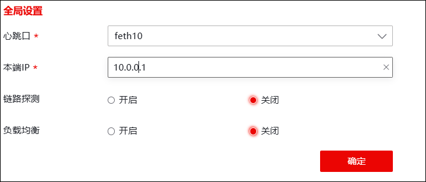
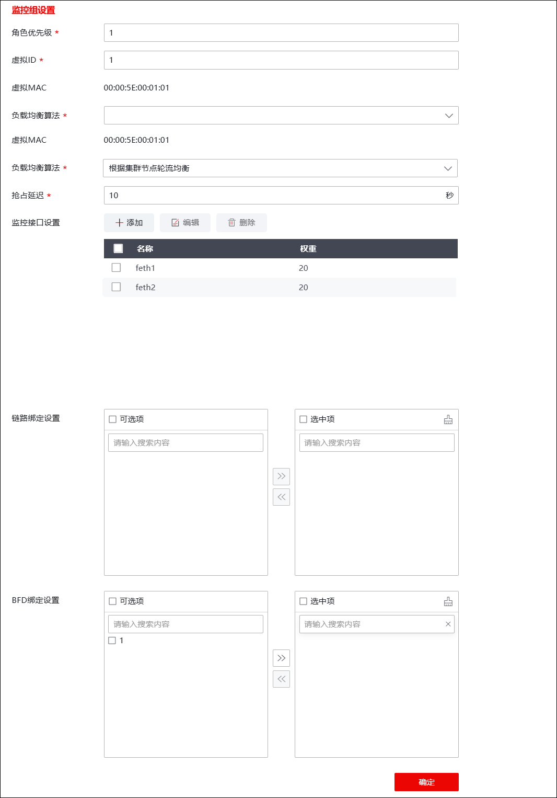

| 步骤1 | 集群部署 |
1）选择 系统管理 > 高可用性 > 高可用性，激活“配置”页签，配置模式点击“”图标，选择“集群模式”，配置心跳口和本端IP地址，如下图所示。

按照如下列表中所示配置高可用性全局配置。
设备名称 |
FWA |
FWB |
FWC |
|---|---|---|---|
心跳口 |
feth10 |
feth10 |
feth10 |
本端IP |
10.0.0.1 |
10.0.0.2 |
10.0.0.3 |
链路探测 |
开启 |
开启 |
开启 |
负载均衡 |
开启 |
开启 |
开启 |
2）点击【确定】按钮，完成高心跳口和本地IP配置。
| 步骤2 | 配置监控组 |
1）配置监控组

按照如下列表中所示配置管理组。
设备名称 |
FWA |
FWB |
FWC |
|---|---|---|---|
角色优先级 |
1 |
2 |
3 |
虚拟ID |
1 |
1 |
1 |
负载均衡算法 |
根据集群节点轮流均衡 |
根据集群节点轮流均衡 |
根据集群节点轮流均衡 |
抢占（默认开启，在“状态”页配置） |
是 |
是 |
是 |
抢占延迟 |
10 |
10 |
10 |
所有接口 |
feth1、feth2 |
feth1、feth2 |
feth1、feth2 |
其中，角色优先级，用于主备的选举。
2）可根据需求配置链路绑定、BFD绑定，配置完成后点击【确定】按钮。
| 步骤3 | 启用高可用 |
1）选择 系统管理 > 高可用 > 高可用性，激活“状态”页签。
2）点击“开启”，功能状态变为“开启”，则已启动防火墙的高可用功能。
|
²B和C防火墙类似，需要主要以下几点： 1）“配置”页中设置监控组信息时，虚拟ID与对端保持一致； 2）监控组接口名和同步地址要与对端保持一致。 |